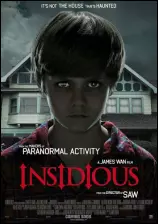

Qui est James Wan, le maestro de l’horreur moderne ?
James Wan est un réalisateur dont le nom est synonyme d'horreur et de suspense. Né le 26 février 1977 à Kuching, en
Malaisie, Wan est devenu l'une des figures les plus influentes du cinéma d'horreur contemporain. Son travail a redéfini
le genre et a marqué une génération de cinéphiles passionnés de frissons.
UN PETIT BUDGET POUR UN GRAND SUCCÈS
Wan a fait ses premiers pas dans l'industrie cinématographique avec son film emblématique "Saw" en 2004. Ce film à petit
budget a révolutionné l'horreur en introduisant le concept de "torture porn", une sous-catégorie du genre qui se
caractérise par des scènes de violence graphique.
Scène de tension avec le personnage d'Amanda, prise au piège
Wan a prouvé qu'il était capable de créer une tension psychologique intense tout en maintenant un budget modeste, ce qui
a fait de "Saw" un énorme succès commercial.
UNE FILMOGRAPHIE REMARQUABLE
Puis, c'est avec la franchise "Insidious" (2010) et "Conjuring" (2013) que James Wan a solidifié sa réputation en tant
que maître de l'horreur

Ses films se caractérisent par une atmosphère terrifiante, des personnages bien développés et une narration captivante.
Wan sait comment jouer avec les peurs du public, en utilisant des éléments visuels et sonores pour créer une expérience
cinématographique immersive.
UN RÉALISATEUR RECONNU PAR LE MILIEU
James Wan est également devenu un producteur très recherché à Hollywood, contribuant au succès de plusieurs projets à
succès. Son talent pour la réalisation, la narration et la création d'atmosphères uniques continue d'influencer de
nombreux cinéastes et inspire de nouvelles générations de réalisateurs d'horreur.
Monument Hollywood, Los Angeles
UN IMPACT EXCEPTIONNEL SUR LE CINEMA
En fin de compte, James Wan a réussi à transcender les frontières du genre de l'horreur pour devenir un réalisateur
polyvalent et respecté. Son impact sur l'industrie cinématographique est indéniable, et il reste une figure
incontournable dans le monde du cinéma contemporain. Les fans attendent avec impatience ses futurs projets, impatients
de voir comment il continuera à repousser les limites du cinéma d'horreur et à nous faire sursauter dans nos sièges de
cinéma.